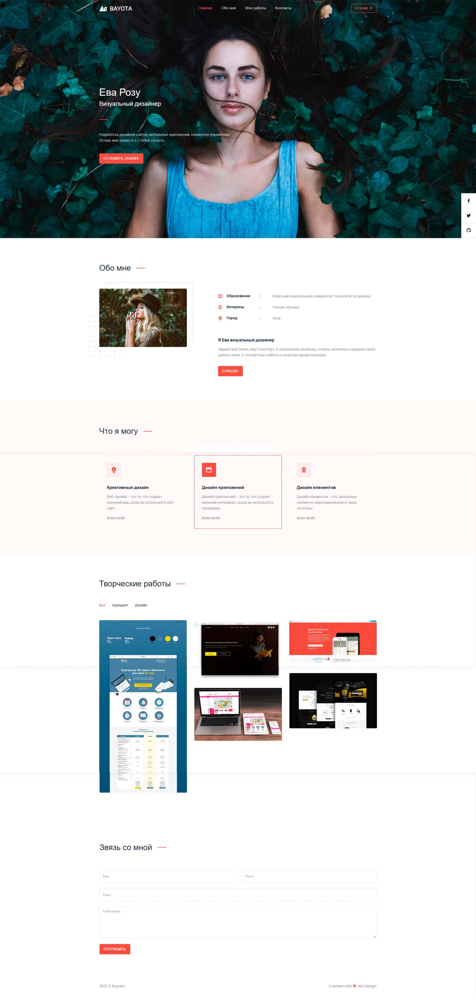

Веб сайт
Сайт Bayota был разработан мной. Я сосредоточились на улучшении и оптимизации навигации, сделав ее более интуитивно понятной и функциональной, выделив главный екран, получив дифференцированный и приятный опыт.

